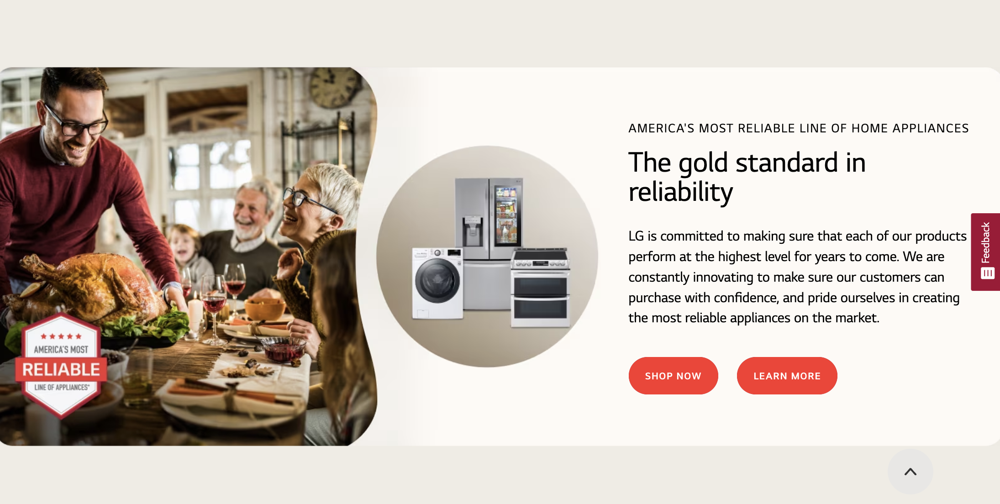

Rule of Thirds
Apple
Apple.comthe rule of thirds refers to a 3 by 3 grid to figurativly put on top of a image. we use this grid to make imges imteresting to look at. website design uses Rule of Thirds making components different sizes and therefore more interesting to look at. in the Screeshot above you can see that apple splits the website into 3 parts making it more apealing to the eye.
White Space and Clean Design
Samsung
Samsung.com
White Space or other wise know as "negative space" doesnt seem like it would be an important part of a website but it is a crucial part to whre your eyes look and the apeal of the website. The screeshot of samsungs website shows different porducts evenly spaced out with white space in between. Without the white space it would look cramped.
Contrast
LG
Lg.com Contrast is one of the most important parts of web design it is the difference between if someone enjoys being in your website or not. Contrast is how unsimilar elements are on the page compared to each other. For instance the screen shot of lg's website shows great contrast because all colors work well together and the contrast between the back groound and the butto makes you look at the button.